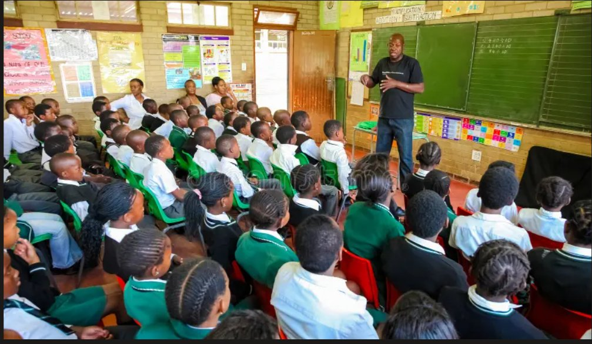

TutoBuddy meets Grade 8–12 learners where they already are — WhatsApp — with mastery-paced tutoring that never runs out of patience. Lower grades planned within 12 months.
of Grade 4 pupils cannot read for meaning.
vacant funded teacher posts vs. 12,700 unemployed qualified educators. National ratio 31:1; primary classes over 40.
matrics pass pure mathematics — only 34.1% even attempt it (64% of those pass).
youth unemployment (ages 15–24), stemming directly from this compounding decade-long gap.

National classes average over 40 learners to one teacher. Every learner who falls behind in that room falls behind quietly — there's no time to circle back, and asking for help in front of forty classmates carries its own cost.
TutoBuddy doesn't ask a stretched teacher to do more. It gives every learner a second, always-available tutor for the hours a classroom can't cover.
Across Sub-Saharan Africa, including 108 million children currently out of school.
South African Grade 9–12 learners with usable smartphone and data access today.
Our serviceable target by Year 5 — roughly 13.5% of the addressable market.
Global AI-tutoring market growth by 2033 — a 30.5% compound annual growth rate.
of 10-year-olds in low/middle-income countries are in "learning poverty" — unable to read and understand a simple text by age 10.
SA youth NEET rate — not in employment, education, or training, a gap this opportunity is sized against.
One teacher, forty-plus students, one fixed pace for everyone.
AI ↔ learner, looping continuously to mastery — no fixed pace, no waiting to be called on.
WhatsApp social/data bundles run ~R29–R99/month depending on network — zero app downloads required.
Katlego re-explains the same concept multiple ways without judgment, removing the stigma of asking for help.
Advances only on demonstrated understanding — completely detached from a fixed bell-schedule.
TutoBuddy is built on mastery-paced practice — re-explaining a concept as many times, and in as many ways, as it takes, without judgment and without a queue. Just steady, repeatable practice aimed at one thing: a learner who actually understands, not one who memorised for the day.